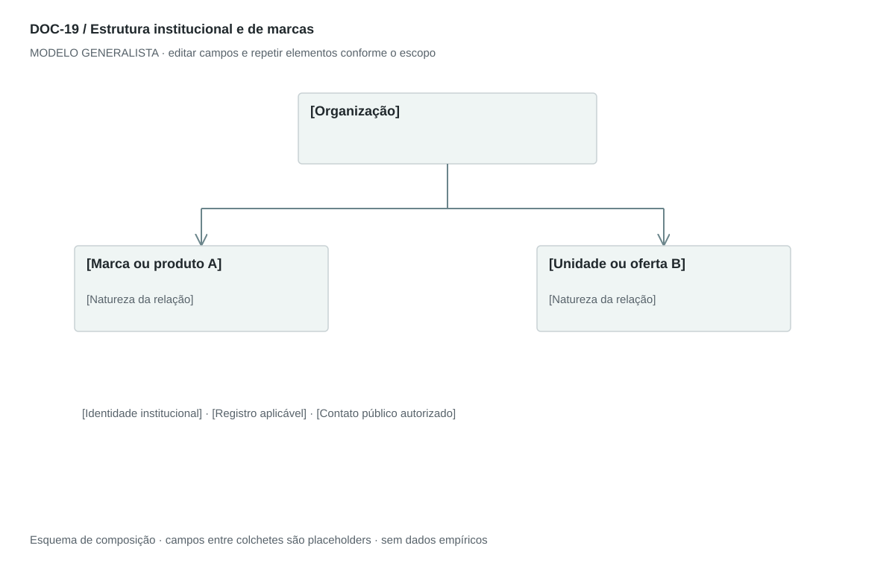

DOC-19 / Biblioteca documental generalista
Estrutura institucional e de marcas
Mostrar a relação entre organização, marcas, produtos ou unidades e os dados institucionais pertinentes.
Modelo de investigação. Não representa uma análise concluída. Campos vazios devem permanecer identificados; não inventar dados para completar figuras.
Estrutura editorial
Uma página com árvore de portfólio e ficha institucional. Rotular cada relação como marca, produto, unidade ou entidade; estrutura societária exige evidência documental específica.
Visual previsto

Organização no topo e ofertas/unidades abaixo. Conectores rotulados indicam natureza da relação. Não desenhar porcentagens ou controle societário sem documento.
Imagens: Caixas vetoriais com cores por tipo de nó; logo oficial opcional com origem. Fotografias não agregam informação estrutural.
Dicionário de dados
| Campo | Tipo | Dado necessário |
|---|
| no_id | referencia | Identificador da organização ou oferta |
| nome | texto | Nome oficial ou de apresentação |
| tipo_no | enum | organizacao, entidade_juridica, marca, produto ou unidade |
| parent_id | referencia | Nó superior ou null para raiz |
| tipo_relacao | enum | portfolio, operacao, marca ou societaria |
| registro | texto | Identificador institucional quando aplicável e autorizado |
| contato_publico | texto | Canal autorizado, não dado privado |
| confirmacao | data | Data de verificação dos dados |
Todos os registros precisam de classificação, fonte, localização, datas, confiança e limitação. Números também precisam de unidade, moeda quando aplicável e período.
Modelo preenchível
Os quadros amarelos podem ser editados nesta página para impressão. Edições não são gravadas automaticamente: use o Markdown/JSON para manter uma versão ou imprima em PDF após editar.
[Negócio] · [Versão] · [Data-base] · [Autor] · [Audiência] · [Território]
Pergunta decisória: [A preencher]
Escopo: [A preencher]
1. Identidade
Nome institucional e nome de apresentação; dados oficiais somente quando disponíveis e necessários.
[Análise + evidência + implicação + lacuna]
2. Portfólio
Marcas, produtos e unidades, com natureza de cada nó.
[Análise + evidência + implicação + lacuna]
3. Relações
Indique comercial, operacional ou societária; percentuais só com comprovação.
[Análise + evidência + implicação + lacuna]
4. Contatos
Canais públicos autorizados e data de confirmação.
[Análise + evidência + implicação + lacuna]
5. Notas de interpretação
Explique o que o diagrama prova e o que permanece indefinido.
[Análise + evidência + implicação + lacuna]
Decisão e próximo passo
[Decisão e justificativa]
[Alternativa considerada]
[Condição de reversão]
[Ação, responsável, prazo e critério]
Fontes e limites
[Fonte + localização + datas + o que sustenta + limitações]
Critérios de revisão
- Marca, produto e entidade jurídica não são tratados como equivalentes.
- Dados de registro e contato do original não entram no modelo.
- Uma seta de portfólio não afirma propriedade societária.
Estudo do arquivo original
DOC-19-fonte.pdf — Uma página em paisagem. Caixa superior azul ligada a duas caixas inferiores laranja e verde; abaixo, registro, endereço e contatos centralizados. O desenho mostra uma organização e duas ofertas, mas sozinho não comprova controle societário ou participação jurídica.
Observação do original e adaptação recomendada são camadas distintas. Nomes, preços, localidades, contatos e conclusões do caso-fonte não devem preencher a nova análise.